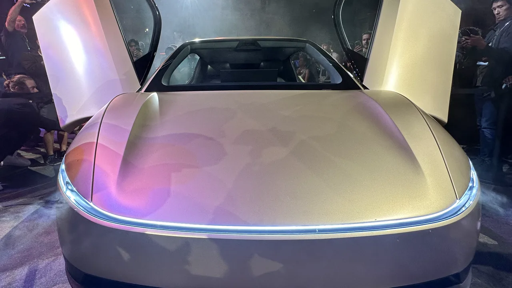

테슬라 주주가 지금 가장 궁금해할 질문은 “테슬라가 자동차 회사냐, 인공지능 회사냐”가 아닙니다. 이미 시장은 로보택시, Optimus, 에너지 저장, 자체 칩, 충전망까지 한꺼번에 가격에 섞어 놓았습니다. 그래서 더 현실적인 질문은 따로 있습니다. 차량 사업이 현금을 계속 만들면서 로보택시와 에너지 사업의 시간을 벌어 줄 수 있느냐입니다.
Tesla의 2026년 1분기 생산·인도 발표에 따르면 회사는 차량 408,386대를 생산했고 358,023대를 인도했습니다. 에너지 저장 제품 배치는 8.8GWh였습니다. 숫자만 보면 전년 대비 인도량은 늘었지만, 생산이 인도보다 약 5만 대 많았다는 점은 그냥 지나치기 어렵습니다. 성장 기업이라도 재고가 쌓이면 가격, 할인, 마진을 다시 봐야 합니다.
Tesla Q1 2026 Update에서 총매출은 223억 8,700만 달러로 전년 대비 16% 증가했고, 총 GAAP 매출총이익률은 21.1%였습니다. 영업이익은 9억 4,100만 달러, GAAP 순이익은 4억 7,700만 달러였습니다. 자유현금흐름은 14억 4,400만 달러였고, 현금과 단기투자는 447억 4,300만 달러였습니다. 테슬라는 여전히 투자할 체력이 있지만, 그 체력을 어디에 쓰는지가 더 중요해진 구간입니다.
차량 재고가 첫 번째 경고등입니다

테슬라를 로보택시 회사로 보더라도 현재 손익계산서의 중심은 아직 차량입니다. 2026년 1분기 자동차 매출은 162억 3,400만 달러였습니다. 에너지 저장과 서비스가 커지고 있지만, 자동차 판매가 흔들리면 회사 전체의 현금 창출력도 같이 흔들립니다. 그래서 첫 번째로 봐야 할 숫자는 인도량보다 재고 일수입니다.
Tesla Q1 2026 Update는 글로벌 차량 재고가 27일치였다고 제시했습니다. 전년 동기 22일, 직전 분기 15일과 비교하면 부담이 커진 숫자입니다. 재고가 늘어나는 이유가 신차 전환 때문인지, 지역별 운송 지연 때문인지, 실제 수요 둔화 때문인지는 분기 하나만으로 단정할 수 없습니다. 다만 투자자는 다음 분기에도 생산이 인도보다 계속 많아지는지 반드시 봐야 합니다.
차량 재고가 중요해지는 이유는 가격 정책 때문입니다. 재고가 많으면 할인과 인센티브가 늘기 쉽고, 할인은 자동차 매출총이익률을 누릅니다. 테슬라는 소프트웨어와 자율주행 기대를 가진 기업이지만, 차량 가격을 낮춰야 판매가 유지되는 구조라면 시장은 로보택시 프리미엄을 더 까다롭게 계산합니다.
이 비교를 위해 리비안과 루시드도 같이 볼 필요가 있습니다. Rivian은 2026년 1분기 10,236대를 생산하고 10,365대를 인도했으며, 매출은 13억 8,100만 달러였습니다. 반면 Lucid는 5,500대를 생산하고 3,093대를 인도했습니다. 전기차 기업은 모두 성장 이야기를 하지만, 생산과 인도 사이의 간격은 회사별로 완전히 다릅니다.
로보택시는 허가보다 운행 밀도입니다
관련 영상
테슬라 1분기 실적과 주가 조건을 설명하는 한국어 롱폼 영상
로보택시는 테슬라 주식의 가장 큰 상상력입니다. Tesla Q1 2026 Update는 회사가 4월에 댈러스와 휴스턴에서 무인 로보택시 운행을 시작했다고 설명했고, 오스틴, 샌프란시스코 베이 지역, 피닉스, 마이애미, 올랜도, 탬파, 라스베이거스 같은 지역별 준비 상황도 제시했습니다. 이 문장은 분명 의미가 있습니다. 테슬라가 단순히 차량을 파는 회사에서 이동 서비스를 운영하는 회사로 넘어갈 수 있기 때문입니다.
하지만 주식 분석에서는 “시작했다”보다 “얼마나 촘촘하게 돈을 버느냐”가 더 중요합니다. 로보택시가 실제 기업가치로 바뀌려면 운행 가능 지역, 차량 대수, 승객 호출 빈도, 사고율, 보험 비용, 규제 승인, 원격 지원 비용이 함께 맞아야 합니다. 도시 하나에서 성공한 시연과 여러 도시에서 반복 가능한 수익 모델은 다른 문제입니다.
FSD 구독도 같은 방식으로 봐야 합니다. Tesla는 active FSD subscriptions가 128만 건으로 전년 대비 51% 증가했다고 제시했습니다. 이 숫자는 긍정적입니다. 다만 FSD는 여전히 소비자가 체감하는 안전성과 편의성이 중요하고, 규제 문구도 민감합니다. FSD 구독이 계속 늘면 소프트웨어 매출의 질이 좋아지지만, 사고와 규제가 커지면 프리미엄은 빠르게 줄어들 수 있습니다.
그래서 테슬라의 로보택시를 볼 때는 발표 횟수가 아니라 유료 운행 마일, 지역별 승인, 차량당 일일 운행 시간, 보험 손실률, 고객 재호출률을 기다려야 합니다. 이 숫자들이 공개되기 전까지 로보택시는 강한 옵션이지만, 아직 본업의 마진을 대신했다고 말하기는 이릅니다.
에너지 저장은 변동을 견뎌야 합니다
테슬라의 에너지 저장 사업은 주주들이 과소평가하기 쉬운 축입니다. 전기차 판매는 지역별 보조금과 소비 심리에 흔들리지만, 대형 배터리 저장 장치는 전력망, 데이터센터, 재생에너지 간헐성, 산업용 전력 비용과 연결됩니다. AI 데이터센터 전력 수요가 커질수록 에너지 저장 사업의 전략적 의미도 커집니다.
문제는 분기 변동입니다. Tesla는 2026년 1분기 에너지 저장 배치가 8.8GWh였다고 밝혔습니다. 2025년 4분기 14.2GWh보다 낮고, 전년 동기 10.4GWh보다도 낮습니다. 에너지 생성 및 저장 매출도 24억 800만 달러로 전년 대비 12% 감소했습니다. 장기 방향이 좋아도 분기별 출하와 프로젝트 인식 시점이 흔들리면 주가는 단기적으로 실망할 수 있습니다.
그렇다고 에너지 사업을 가볍게 보면 안 됩니다. Tesla Q1 2026 Update는 휴스턴 인근 신규 Megafactory에서 Megapack 3 생산을 준비하고 있고, 상업 생산 시작을 올해 말로 보고 있다고 설명했습니다. 에너지 저장 사업의 관건은 단순 매출이 아니라 설치 용량, 프로젝트 인도 속도, 매출총이익률, 반복적인 유지보수 수익입니다.
여기서 현대차도 비교축이 됩니다. 현대차는 2026년 1분기 매출 45조 9,400억 원으로 1분기 기준 최고 매출을 냈고, 전동화 모델 판매는 24만 2,612대였습니다. EV와 HEV가 함께 늘었지만, 영업이익은 관세 영향으로 30.8% 감소했습니다. 이 숫자는 전기차 산업의 본질을 잘 보여줍니다. 전동화 수요가 있어도 비용과 관세가 이익을 바로 흔듭니다.
주주는 여섯 숫자를 고정해서 보면 됩니다
첫 번째는 생산과 인도의 차이입니다. 테슬라가 생산한 차량을 제때 인도하지 못하면 재고와 할인 부담이 커질 수 있습니다. 두 번째는 글로벌 차량 재고 일수입니다. 27일치가 일시적이면 괜찮지만, 계속 높아지면 수요와 가격을 다시 봐야 합니다.
세 번째는 자동차 매출총이익률입니다. 테슬라의 미래가 로보택시와 로봇에 있다 해도, 현재 투자 자금은 차량 사업에서 나옵니다. 네 번째는 에너지 저장 배치 GWh입니다. 이 숫자는 AI 전력 수요와 전력망 투자 사이클을 테슬라가 얼마나 잡고 있는지 보여 줍니다.
다섯 번째는 active FSD subscriptions입니다. 128만 건이 계속 늘고, 유료 사용 시간이 올라가면 테슬라의 소프트웨어 내러티브는 더 단단해집니다. 여섯 번째는 자유현금흐름입니다. 14억 4,400만 달러의 자유현금흐름은 긍정적이지만, Cybercab, Semi, Optimus, 배터리 소재, AI 컴퓨트 투자가 동시에 늘면 이 숫자의 지속성이 더 중요해집니다.
상승 시나리오는 분명합니다. 차량 재고가 줄고, 자동차 마진이 유지되며, 에너지 저장 배치가 다시 늘고, 로보택시가 유료 운행 데이터로 검증되는 경우입니다. 이때 테슬라는 자동차 회사에서 에너지와 자율주행 플랫폼으로 확장되는 기업이라는 평가를 다시 받을 수 있습니다.
반대로 하락 시나리오도 단순합니다. 생산과 인도의 차이가 계속 벌어지고, 가격 인하로 자동차 마진이 눌리며, 에너지 저장 배치가 들쭉날쭉하고, 로보택시 숫자가 발표보다 늦게 따라오는 경우입니다. 테슬라가 사라진다는 뜻이 아닙니다. 기대가 큰 주식은 좋은 회사라도 검증 속도가 늦어지면 밸류에이션이 먼저 조정될 수 있다는 뜻입니다.
그래서 지금 테슬라를 볼 때는 로보택시 영상을 먼저 보는 것보다 생산·인도 차이, 재고 일수, 자동차 마진, 에너지 저장 GWh, FSD 구독, 자유현금흐름을 같은 표에 넣어 보는 편이 낫습니다. 이 여섯 숫자가 함께 좋아질 때 테슬라의 미래 이야기는 주가에 더 오래 남습니다. 한두 숫자만 좋아지면 주가는 다시 발표와 실적 사이에서 흔들릴 수 있습니다.
이 글은 특정 종목의 매수나 매도 추천이 아닙니다. 투자 판단 전에는 Tesla의 최신 공시, 실적 발표, 차량 가격 정책, 로보택시 규제 상황, 자신의 투자 기간을 함께 확인해 주세요.